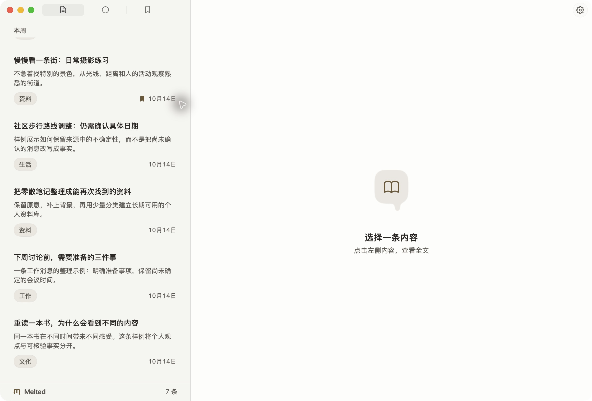
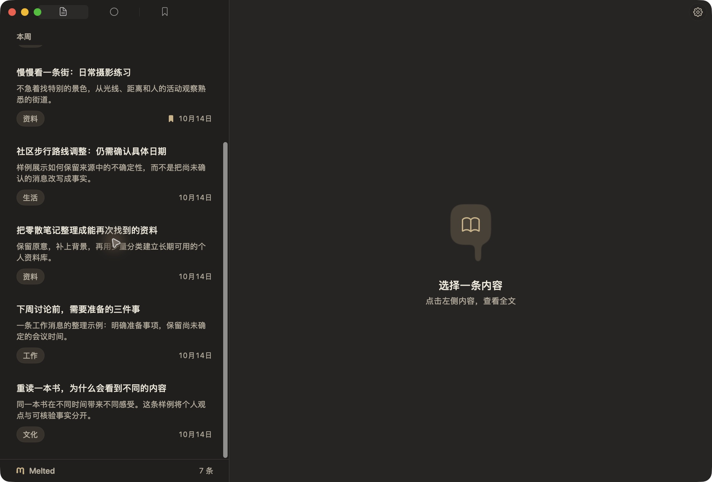
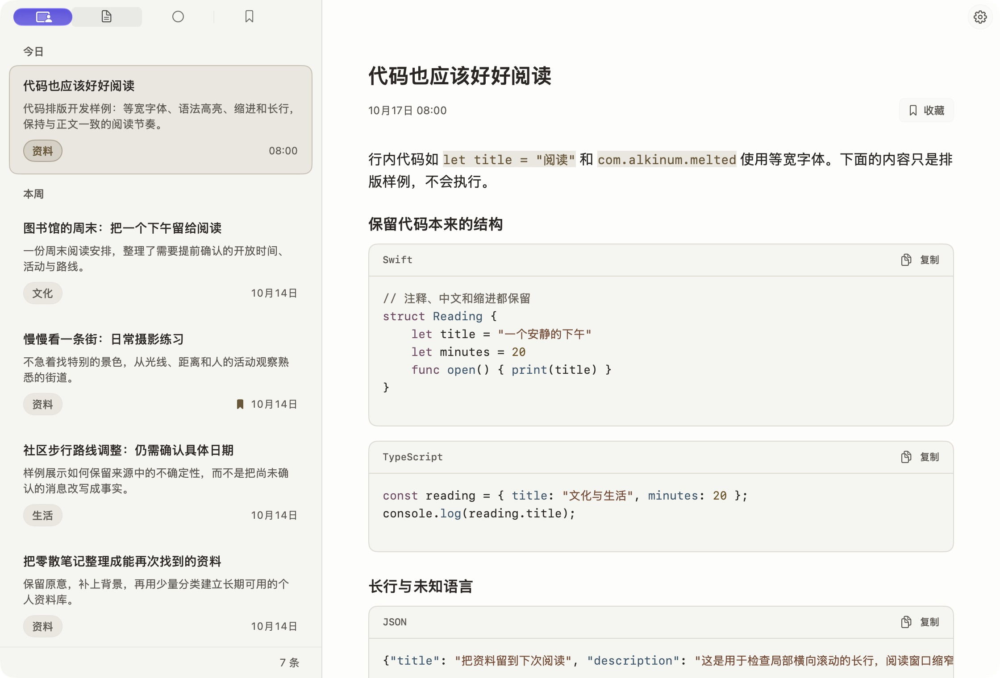
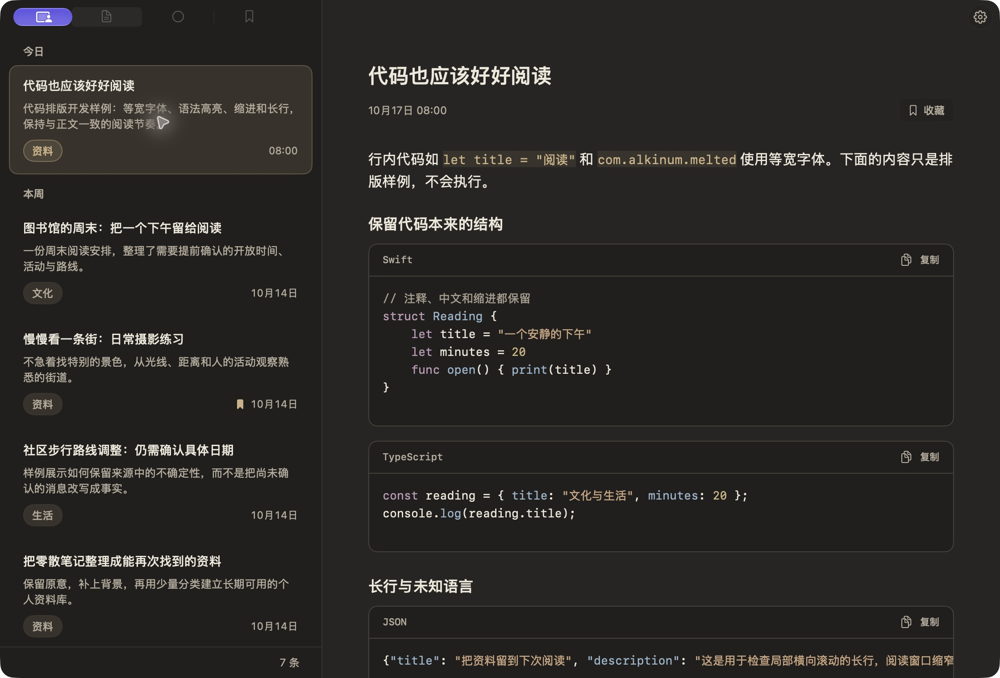
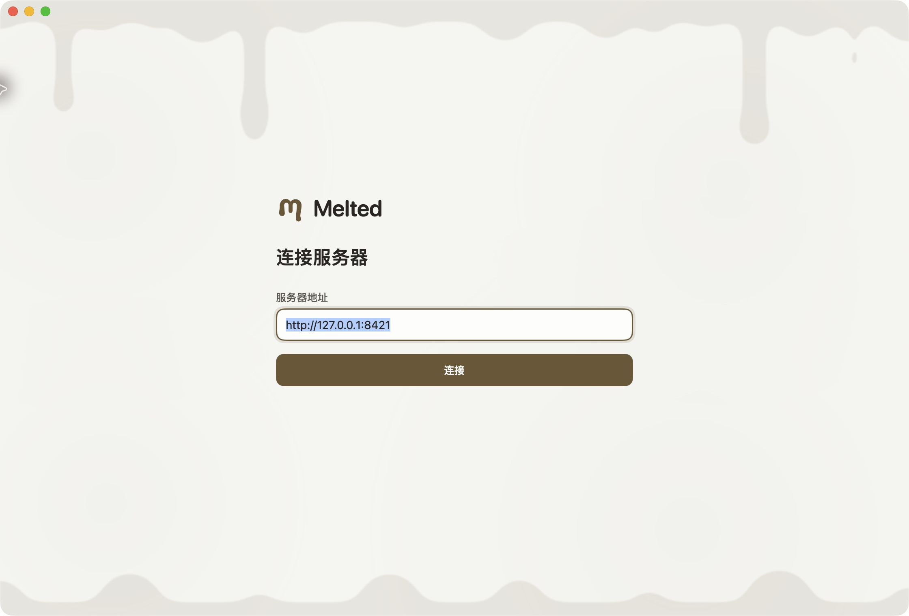
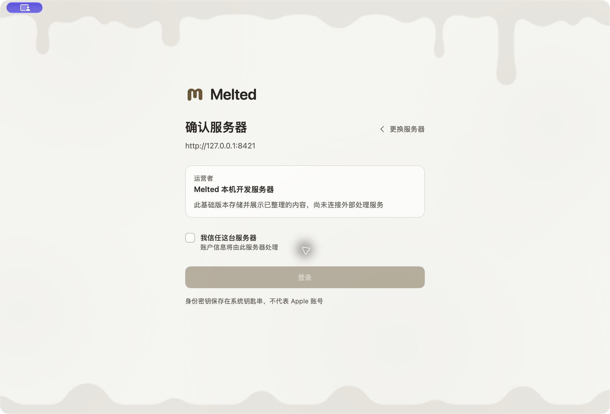
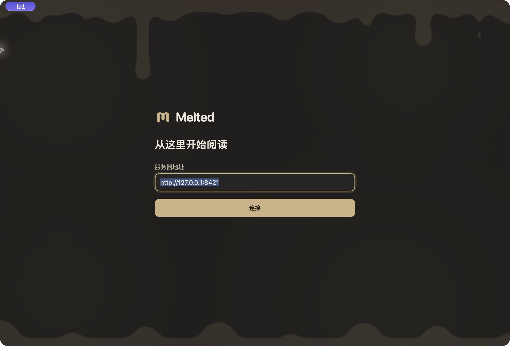
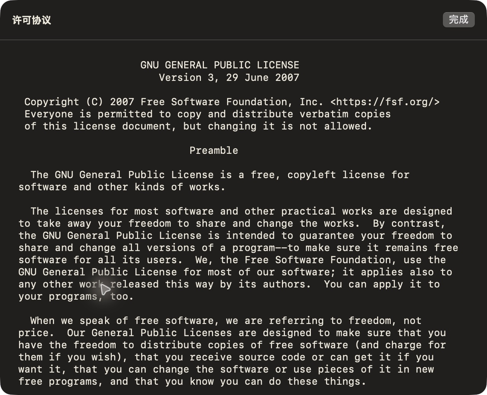
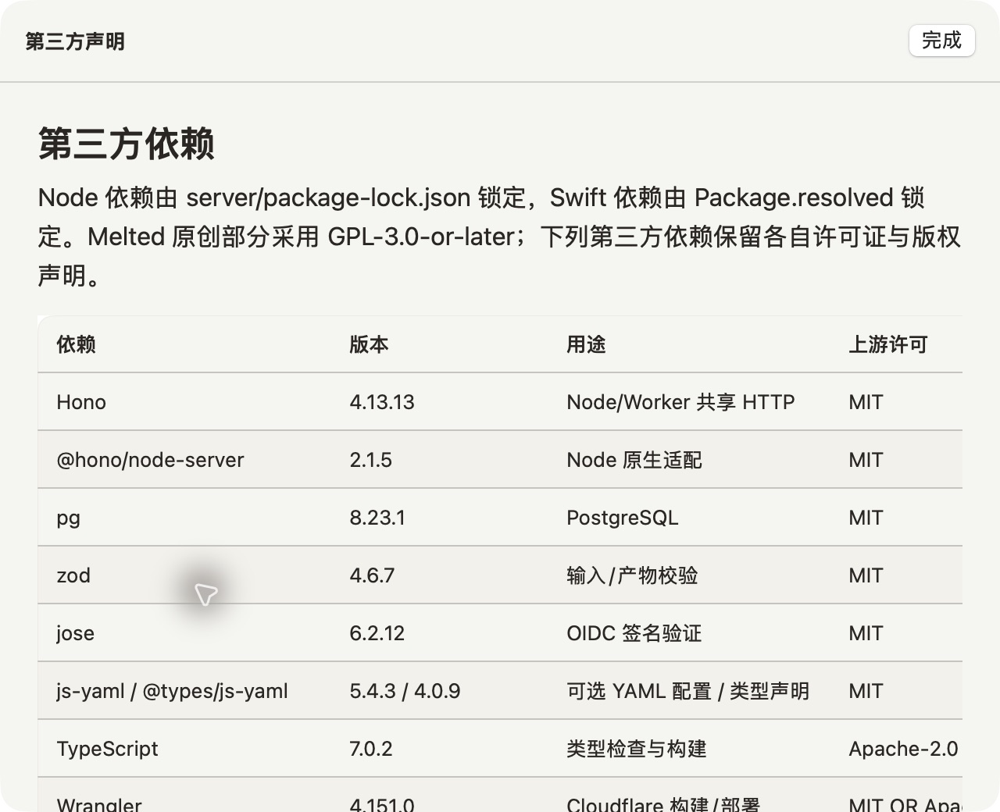

安静、温暖的原生阅读
当前设计参考：真实截图、共享颜色与页面规则
正文是视觉中心。暖纸白与暖炭灰共用相同层级，褐色只用于必要操作；布局依靠文字、留白和边线，保留原生窗口与控件行为。
本页是设计文档，不模拟 App 功能。图片来自已有 macOS 原生构建，内容为公开开发样例；浏览器外观只改变文档，静态截图保持原色。iOS、完整离线与 AI 处理尚未交付。
资讯工作台
- 窗口
- 无导航侧栏、无顶部品牌条，隐藏可见“资讯”标题；宽窗双栏，窄窗列表进入详情
- 操作
- 全部 / 未读 / 收藏与最右设置；有条件才显示摘要，不另占筛选行
- 正文
- 标题、时间与收藏，必要证据警告；正文后以字段排列分类、标签、关注与依据




底栏字标使用 16 pt 标识、13 pt 文字和 6 pt 间距；空列表仍显示。原生验证记录
代码与 App 图标
行内代码使用系统等宽字体与轻底色；代码块使用原生文本、低饱和语法色、语言/复制栏和 10 pt 圆角边框。缩进、中文、空行和长行保留，未知语言回退完整原文；高亮引擎离线随包，代码不会执行。




图标复用正式 m 轮廓与共享配色，提供 SVG、1024 PNG 和原生多尺寸 ICNS。图标资产与生成说明
连接与服务器确认
Wordmark 位于表单标题上方，与字段左边线对齐。边缘融化背景保留中央留白；连接后列表底栏左侧显示紧凑字标，右侧保留条数；工作台顶部不另加品牌条。
连接切步只做 220 ms 淡化，登录方式切换关闭布局插值。输入框和按钮保持同列同宽，避免弹簧、水平滑动或错峰进入造成“飞过”。

查看服务器确认与深色入口


成对语义颜色
直接读取本页内嵌 tokens.json；静态不透明颜色对通过不代表材质、透明度或原生辅助设置已通过
页面与状态基线
| 范围 | 规则 | 当前边界 |
|---|---|---|
| 搜索 | 统一输入、分类/标签/关注建议；清条件保留 view | 原生 sheet 已由菜单/⌘F 和有效条件摘要挂载 |
| 依据 | 文末按需展开编号来源，风险前置 | 没有独立反馈按钮或大核验卡 |
| 设置 | 外观、来源与插件、服务器偏好、账户、关于；原生 grouped Form | 偏好与可选凭据按服务端 DSL 渲染；通知、反馈等仍为后续页面 |
| 空态 / 失败 | 区分无内容、未读空、收藏空、无匹配；提示与操作就地展示 | 已加载内容留内存，不称完整离线缓存 |
| 字号 / 窗口 | 阅读 16 pt，100–200%；最小窗口 680×520 pt | 200% 阅读不等于界面全局缩放或 iOS Dynamic Type |
| 动效 | 选择 120 ms、hover 160 ms，减少动态时冻结/关闭 | 旧 page spring 不用于连接流程 |
查看法律文本的原生证据

